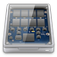

Auslagerung
Dieser Artikel wurde für die folgenden Ubuntu-Versionen getestet:
Dieser Artikel ist größtenteils für alle Ubuntu-Versionen gültig.
Zum Verständnis dieses Artikels sind folgende Seiten hilfreich:
Hinweis:
Dieser Artikel ist Teil der Artikelserie SSD, welche das Thema Solid State Drives behandelt. Dieser Artikel geht in allen Beschreibungen davon aus, dass die SSD als /dev/sda im System eingebunden ist. Die Befehle müssen bei davon abweichenden Systemen daher gegebenenfalls angepasst werden.
 Jedes Linux-System und dessen Anwendungen benötigt Speicherplatz für temporäre Daten. Temporäre Daten brauchen einen Systemabschluss („Ausschalten/Neustart“) nicht zu überstehen. Sie sind somit nicht persistent.
Für die Zwischenspeicherung temporärer Daten kann Linux wahlweise RAM oder Festplatten nutzen. Aus Geschwindigkeitsgründen (primär) und aus Haltbarkeitsgründen (sekundär) optimiert man die Schreibzugriffe auf die SSD. Programme nutzen dann RAM und/oder andere Festplatten des Systems. Dazu muss der Rechner einerseits über ausreichend Speicher in Form von RAM (empfehlenswert sind vier Gigabyte oder mehr – siehe 64-Bit-Architektur) oder aber über weitere Festplatten verfügen.
Dies bringt zwei Vorteile beim Einsatz einer SSD:
Der Zugriff auf Daten im RAM ist um ein Vielfaches schneller als der Zugriff auf eine SSD
Es werden viele Schreibvorgänge von meist nur kleinen Dateien auf die SSD vermieden
Beispielsweise werden in der Linux-Verzeichnisstruktur temporäre Dateien in /tmp und in einigen Unterverzeichnissen von /var (z.B. /var/run, /var/lock) gespeichert. Die dort abgelegten Daten kann man bei Bedarf in andere Dateisysteme verlagern, die ggf. (nur) im schnellen RAM liegen und dafür aber mit dem Herunterfahren des Systems verloren gehen. Darüber hinaus benutzen einige Anwendungen einen eigenen Cache (siehe Firefox und Chromium), der sich ebenfalls verlagern lässt.
Hinweis:
Die Linux-typische Swap-Partition soll an dieser Stelle bewusst ausgeklammert werden. Sobald ein System bei normalem Betrieb öfter auslagert, sollte man zunächst in ausreichend RAM investieren, bevor man an eine SSD denkt.
Verlagerung von /tmp¶
Ob das Verlagern des /tmp Verzeichnisses ins RAM sinnvoll ist, muss im Einzelfall entschieden werden (siehe Auslagerungsspeicher). Sofern sich neben der SSD auch eine Festplatte im System befindet, kann /tmp wegen der vielen Schreibzugriffe darauf jedoch problemlos auf die Festplatte ausgelagert werden.
Hinweis:
Verlagert man Dateien und Ordner von /tmp ins RAM, so sollte man sich darüber im Klaren sein, dass diese nach einem Neustart nicht mehr verfügbar sind. Auch sollte man die Auslastung des RAM im Auge behalten, so dass dieses nicht überläuft. Dies trifft vor allem bei Brennprogrammen zu, die teilweise sehr hohe Datenmengen in /tmp zwischenspeichern. Des weiteren können in Mehrbenutzer-Systemen andere eingeloggte Anwender Zugriff auf eigene Dateien und Ordner in /tmp erhalten.
Mit dem nachfolgenden Befehl in einem Editor [1] kreiert man eine RAM-Disk in /etc/fstab [2] , die den Ordner /tmp aufnimmt:
tmpfs /tmp tmpfs nosuid 0 0
Dadurch wird eine dynamische RAM-Disk namens tmpfs für den Ordner /tmp erstellt und diesem standardmäßig maximal die Hälfte des RAM-Speichers zur Verfügung stellt. "Dynamische RAM-Disk" bedeutet, dass stets nur der aktuell darin belegte Platz vom verfügbaren RAM abgezwackt wird.
Die Änderungen werden nach einem Neustart des Systems oder per folgendem Befehl im Terminal [3] mit Root-Rechten [4] aktiviert:
sudo mount -a
RAM Größenbegrenzung für /tmp anpassen¶
Standardmäßig richtet das System eine RAM-Disk so ein, dass maximal die Hälfte des RAM belegt werden kann. Möchte man dieses Limit z.B. erhöhen um die Auslagerung der Daten vom RAM auf die Swap-Bereich zu vermeiden, so kann man dies auf zweierlei Art tun: Per absolutem oder prozentualem Wert. Die Werte werden wie folgt in /etc/fstab [2] konfiguriert:
absoluter Wert:
tmpfs /tmp tmpfs nosuid,size=2G 0 0
relativer Wert:
tmpfs /tmp tmpfs nosuid,size=15% 0 0
Im ersten Fall wird der fixe absolute Wert zwei Gigabyte (siehe Markierung) zugewiesen. An dieser Stelle kann man auch 512M für 512 Megabyte setzen. Im zweiten Fall wird der fixe relative Wert 15% (siehe Markierung) des RAM genutzt. Man kann ebenso auch jede andere Zahl eintragen wie z. B. 45%. Als grober Richtwert hat sich 15% bei vier Gigabyte RAM (entspricht 600 Megabyte) als ausreichend erwiesen. Dies ist natürlich subjektiv und vom Einsatzzweck abhängig.
Verlagerung von /var¶
Ubuntu verlagert bereits standardmäßig /var/run und /var/lock. Eine Verlagerung weiterer Unterverzeichnisse soll hier nicht empfohlen werden. Die Verlagerung von /var/log z.B. würde dazu führen, dass bei jedem Neustart alle Logdateien des Systems verloren gehen.
Status¶
Hat man sich dazu entschieden auszulagern, kann man das Ergebnis wie folgt überprüfen. Dies ist ebenfalls sinnvoll, um die gemachten Einstellungen gegebenenfalls nach oben oder unten zu korrigieren. Mit dem Terminal-Befehl [3]
df -h
kann man nachschauen, ob die RAM-Disk und/oder der Shared Memory Bereich korrekt angelegt wurde. Die Ausgabe sieht in etwa wie folgt aus:
tmpfs 2,0G 28M 2,0G 1% /tmp shm 4,0G 3,9M 4,0G 0% /dev/shm none 3,9G 84K 3,9G 1% /var/run none 3,9G 0 3,9G 0% /var/lock
Die Anzeige im einzelnen:
Die RAM-Disk tmpfs nimmt dabei maximal 2,0 Gigabyte an Platz auf dem 8 Gigabyte umfassenden RAM ein. In Gebrauch (und tatsächlich im RAM belegt) sind davon 28 Megabyte, so dass aufgerundet 2,0 Gigabyte verfügbar bleiben. 1% der RAM-Disk ist belegt und eingebunden ist sie als /tmp.
Der Shared Memory Bereich shm ist insgesamt 4,0 Gigabyte groß. 3,9 MB sind zurzeit in Gebrauch, so dass 4,0 Gigabyte verfügbar bleiben. 1% des Bereichs sind belegt und eigebunden ist der Bereich als /dev/shm.
Die dritte und vierte Zeile zeigen /var/run, /var/lock, die bereits standardmässig in tmpfs gespeichert werden.
Verlagerung des Browser-Caches¶
Weil Internet-Browser häufig und viel in ihren Zwischenspeicher (Cache) schreiben, kann dieser in eine RAM-Disk verlagert werden. Mit einer Verlagerung geht jedoch mit jedem Neustart der gesamte Cache verloren. Dies kann mit dem profile-sync-daemon  , der den Cache beim Neustart automatisch auf/von Festplatte speichert/lädt, vermieden werden. Eine Anleitung zur Einrichtung findet man auf ubuntuforums.org .
, der den Cache beim Neustart automatisch auf/von Festplatte speichert/lädt, vermieden werden. Eine Anleitung zur Einrichtung findet man auf ubuntuforums.org .
Firefox¶
Wie man den Browser-Cache von Firefox auslagert, steht im Artikel Firefox/Tipps.
- Erstellt mit Inyoka
-
 2004 – 2017 ubuntuusers.de • Einige Rechte vorbehalten
2004 – 2017 ubuntuusers.de • Einige Rechte vorbehalten
Lizenz • Kontakt • Datenschutz • Impressum • Serverstatus -
Serverhousing gespendet von